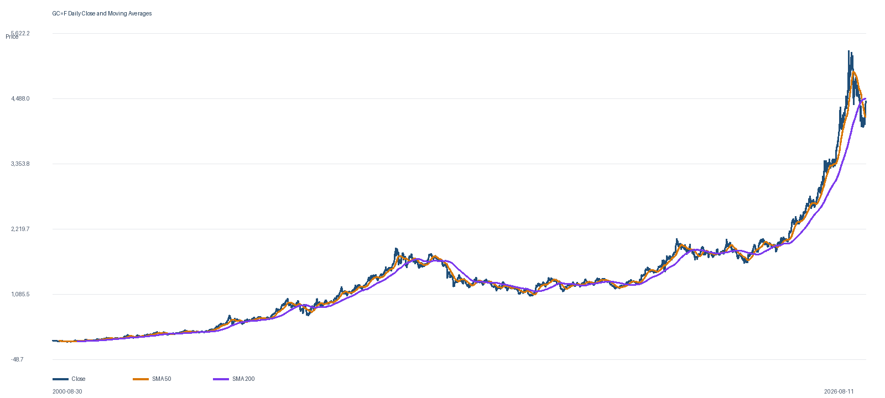

เผยแพร่ 12 สิงหาคม 2026 · ข้อมูลถึง 12 สิงหาคม 2026
รายงานกลยุทธ์ทองคำ Forex — สิงหาคม 2026
ไม่ใช่ข้อมูลแนะนำการลงทุน: รายงานนี้เป็นกรอบวิเคราะห์และบริหารความเสี่ยงเพื่อการศึกษา ไม่ใช่คำแนะนำเฉพาะบุคคลหรือการรับประกันกำไร ราคา GC=F อาจต่างจาก XAU/USD/CFD ผู้ใช้ต้องตรวจราคา มูลค่าต่อจุด leverage, margin, spread และข้อกำหนดโบรกเกอร์ก่อนส่งคำสั่งจริง
สรุปสำหรับการตัดสินใจ
Close ล่าสุด4,448.4011 ส.ค. 2026
ผลตอบแทน ส.ค.+9.86%เทียบ Close 31 ก.ค.
ช่วง High–Low10.62%4,026.50–4,454.00
Vol. annualized23.00%ข้อมูลเพียง 7 วัน

ข้อเท็จจริงและข้อจำกัดข้อมูล
- ข้อมูล GC=F สองชุดครอบคลุม 6,510 วัน ระหว่าง 30 ส.ค. 2000–11 ส.ค. 2026 โดยไม่มีวันที่ซ้ำหรือค่าว่าง
- Open, High และ Low ตรงกัน แต่ Close และ Volume ล่าสุดต่างกันเล็กน้อย จึงไม่ตีความ Volume ล่าสุดอย่างมั่นใจ
- ไม่มี metadata เรื่อง timezone, snapshot หรือ continuous-contract adjustment และ GC=F ไม่เท่ากับราคา XAU/USD CFD ทุกโบรกเกอร์แบบ 1:1
ภาวะตลาดเดือนสิงหาคม
| มิติ | ข้อมูล | ตีความอย่างมีเงื่อนไข |
|---|---|---|
| Trend สั้น | Close > SMA20 4,122.37 และ SMA50 4,164.28 | โมเมนตัมขาขึ้น |
| Trend ยาว | Close < SMA200 4,482.06 | ยังไม่ยืนยันกลับเป็นขาขึ้นเต็มกรอบ |
| Momentum | RSI14 69.90; MACD 51.69 > Signal 2.24 | บวก แต่ใกล้เขตที่มักเกิดการพักตัว |
| Risk | ATR14 78.10 หรือ 1.76%; Vol20 annualized 23.29% | SL แคบกว่า 0.75–1.0 ATR เสี่ยงถูก noise |
| Range | แนวต้าน 20 วัน 4,454; แนวรับ 20 วัน 3,964.20 | ราคากำลังทดสอบขอบบน |
กลยุทธ์แบบ Scenario — ใช้กับราคา GC=F
| แผน | Trigger / Entry | SL | TP | เหตุผลและการยกเลิก |
|---|---|---|---|---|
| A: Buy breakout | H4 หรือ Daily ปิดเหนือ 4,475 แล้ว retest 4,454–4,475 ไม่หลุด | 4,395 | TP1 4,555; TP2 4,635; runner 4,750–4,765 | ยืนยันผ่านแนวต้าน 20 วันและ SMA200; ยกเลิกถ้าปิดกลับต่ำกว่า 4,454 |
| B: Buy pullback | โซน 4,180–4,120 และเกิดแท่งกลับตัว H4 + RSI H4 กลับเหนือ 50 | 4,040 | TP1 4,300; TP2 4,445 | อิง EMA20/SMA20; ไม่รับมีดถ้าปิด Daily ต่ำกว่า 4,120 |
| C: Sell rejection | ทดสอบ 4,454–4,482 แล้ว H4 ปิดต่ำกว่า 4,390 | 4,485 | TP1 4,310; TP2 4,225 | ใช้เมื่อ breakout ล้มเหลว; ยกเลิกหาก H4 กลับเหนือ 4,482 |
| D: Sell breakdown | Daily ปิดต่ำกว่า 4,120 และ retest 4,120–4,165 ไม่ผ่าน | 4,205 | TP1 4,040; TP2 3,965 | บ่งชี้แรงส่งสั้นเสีย; ยกเลิกหาก Daily กลับเหนือ SMA50 |
การจัดการ: เมื่อถึง TP1 ให้ปิด 40–50% และเลื่อน SL ส่วนที่เหลือไป breakeven เมื่อราคาผ่านอย่างน้อย +1R ไม่เพิ่มไม้ขาดทุน ไม่ถือสองแผนที่ขัดกันพร้อมกัน ขนาดสัญญา = เงินที่ยอมเสีย ÷ (ระยะ SL × มูลค่าต่อจุดของโบรกเกอร์)
ปฏิทินเหตุการณ์สำคัญ
| เวลาไทย | เหตุการณ์ | ความเสี่ยง | เงื่อนไขเฝ้าดู |
|---|---|---|---|
| 12 ส.ค. 19:30 | CPI สหรัฐฯ เดือน ก.ค. | สูงมาก | CPI/core สูงกว่าคาดอาจหนุน yield/USD และกดทอง; ต่ำกว่าคาดอาจหนุนทอง แต่ต้องรอ price confirmation |
| 13 ส.ค. 19:30 | PPI เดือน ก.ค. | สูง | ชี้แรงกดดันต้นทุนและอาจเปลี่ยนคาดการณ์ดอกเบี้ย |
| 18 ส.ค. 19:30 | Import/Export Prices | กลาง | ติดตามผลจากพลังงานและการค้าต่อเงินเฟ้อ |
| 20 ส.ค. 01:00 (คืน 19) | FOMC Minutes 28–29 ก.ค. | สูงมาก | จับน้ำหนักเสียงฝ่ายต้องการขึ้นดอกเบี้ย |
| 26 ส.ค. 19:30 | GDP Q2 Second Estimate + PCE ก.ค. | สูงมาก | Growth อ่อนและ core PCE ชะลออาจหนุนทอง; เงินเฟ้อดื้อหรือโตแรงอาจกดทองผ่าน yield |
| 27–29 ส.ค. | Jackson Hole Symposium | Headline risk สูง | ตรวจเวลา speech เมื่อ agenda เผยแพร่ |
| 28 ส.ค. 21:00 | Preliminary payroll benchmark revision | สูง | ผลต่อทองขึ้นกับทิศทาง USD และ yield |
ข่าวด่วนที่ต้องตั้ง Alert
- Middle East / Strait of Hormuz / ราคาน้ำมัน: ข่าวสงบศึกอาจลด safe-haven premium ส่วนข่าวปิดเส้นทางหรือโจมตีใหม่อาจดันทองและน้ำมันพร้อมกัน แต่ yield อาจขึ้นจากเงินเฟ้อ ทำให้ทิศทองไม่เป็นเส้นตรง
- คำพูดกรรมการ Fed: headline เชิง hawkish มีผลสูงต่อ USD, yield และทอง
- การแก้ไขข้อมูลแรงงาน: revision เพิ่มเติมอาจเปลี่ยนเส้นทางดอกเบี้ยได้ทันที
- การซื้อทองของธนาคารกลาง/ETF: เป็นฐานรองรับเชิงโครงสร้าง แต่ไม่ใช่ timing signal ระยะสั้น
- ความต่างข้อมูล/rollover: ตรวจ futures basis, contract rollover, spread และ liquidity ก่อนใช้ระดับราคา
Decision card
แหล่งข้อมูล
- BLS Employment Situation
- BLS August 2026 release calendar
- BEA release schedule
- Federal Reserve FOMC statement
- Kansas City Fed — Jackson Hole
- World Gold Council — central-bank demand
คำเตือนสำคัญ — ไม่ใช่ข้อมูลแนะนำการลงทุน: เอกสารนี้เป็นกรอบวิเคราะห์และบริหารความเสี่ยงจากข้อมูลที่มี ไม่ใช่คำแนะนำส่วนบุคคลหรือการรับประกันกำไร ราคา GC=F อาจต่างจาก XAU/USD/CFD และคำสั่ง SL อาจเกิด slippage โดยเฉพาะช่วงข่าว